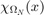

gridd
Abstract basis class for all grid objects. Defines properties p,e,t for storing points, edges/faces, and triangles/tetraeder/prisms.
The property b stores the boundary condition matrix in pdetool style.
Note that you cannot create objects from abstract classes. It is used only as a parent class for gridXD classes and for deriving further user classes.
gridd provides methods that be independent from the specific type of grid or space dimension.
Copy style: handle.
Abstract classes cannot be instantiated. Class 'gridd' defines abstract methods and/or properties.
Contents
- Inheritance
- Properties with SetAccess = protected
- Abstract properties.
- Dependent properties with GetAccess = public and SetAccess = private
- Constant properties
- Public methods
- gridd
- copy
- disp
- makeBoundaryMatrix
- dirichletBC
- neumannBC
- robinBC
- point2Center
- center2Point
- nearestPointInGrid
- midpts
- point2CenterMatrix
- center2PointMatrix
- setBoundarySegemntNumber
- setSubdomainNumber
- chi
- refineUniformly
- rotateMesh
- moveMesh
- scaleMesh
- interpolate
- getBoundaryPoints
- getBoundaryElementsIndex
- point2CenterB
- midpointsOfBoundaryElements
- getBoundaryPointsIndex
- getBoundaryPointsIndexPerElement
- getBoundaryPointsIndexPerSegment
- getInnerPointsIndex
% Important %% tag. Don't remove it! % Note % Since we want ot have a hard-copy method, all properties will be protected. % Otherwise, we cannot copy them in derived classes.
Inheritance
gridd < handle
classdef (Abstract) gridd < handle
% Changes: % 8/9/2016 % Change some methods to dependent props. nElements, nPoints, etc. % 5/5/2015 % Add new abstract method sideLengthAndArea that computes the % sidelengths and areas of elements. Implement it in gridXd classes! % % 10/29/2013 % "geometrie" property g removed (becuase this version is pdetool free). % nBoundarySegments is now the maximum of numbered boundary % segments, not the number of defined boundaries in obj.b % makeBoundaryMatrix can now be called with only one argument to give % one boundary condition to ALL boundary segments. % 2014/08/13 % Code change in nBoundarySegmenst: Now it gives back the number of % different names % Now a one parameter call of dirichletBC is possible, e.g. % dirichletBC(2) is BC y = 3; % % (c) 2013-2016 by Uwe Prüfert
Properties with SetAccess = protected
- p (double) Coordinates of grid points
- e (double) Indices of edge points
- t (double) Indices of element points
- isExtended (logical, false)
- b (double) Boundary condition matrix in pdetool-style where char(b) gives the human readable definition of the boundary condition. Will be created by class methods and cannot be edited.
For 1D and 3D grids, "edge" stands for all shapes ob boundary elements and "element" stands for all shapes of elements.
properties(GetAccess = public,... SetAccess = protected) % % p e t = points, edges triangle, as in PDE tool defined. % p double % points e double % edges t double % triangles b % boundary condition cell or double end properties(SetAccess = protected,... GetAccess = public,... Hidden = true) isExtended logical = false % if expanded then e.g. % additional points added to p end
Abstract properties.
Redefine it in derived classes!
- nPointsInElements (double) number of points in elements.
It may 2 for 1D elements, 3 or 4 for triangles or squares, or 6 for extended triangles, etc.
properties(GetAccess = public,... SetAccess = protected,... Abstract = true) nPointsInElements double % Number of points in element,... % two in 2D, three or four in 2D,... % four or six in 3D end
- spaceDimension (double) Dimension of space, 1,2, or 3
properties(GetAccess = public,... Constant = true,... Abstract = true) spaceDimension double % Dimension of space, N = {1,2,3}. end
Dependent properties with GetAccess = public and SetAccess = private
- x (double) All values of X-coordinate
- y (double) All values of Y-coordinate (if applicable)
- z (double) All values of Z-coordinate (if applicable)
- nElements (double) Number of elements in grid
- nPoints (double) Number of points in grid
- nEdges (double) Number of edge-elements in grid
- nBoundarySegments (double) Number of of boundary segments in grid
- nBoundaryPoints (double) Number of points on the boundary of grid
- nDirichletPoints (double) Number of Dirichlet boundary points
- nDirichletBoundarySegments (double) Number of Dirichlet boundary Segments
- nRobinBoundaryElements (double) Number of Robin boundary elements
- nRobinBoundarySegments (double) Number of Robin boundary segments
- indexOfDirichletBoundarySegments (double) Vector with index of Dirichlet boundary segments
- indexOfDirichletBoundaryPoints (double) Vector with index of Dirichlet boundary points
- indexOfRobinBoundarySegments (double) Vector with index of Robin boundary segments
- indexOfRobinBoundaryElements (double) Vector with index of Robin boundary elements. In order of boundary segments, i.e. elements of segment 1, ... elements of segment N.
Note that such properties need a get method.
properties(GetAccess = public,... SetAccess = private,... Dependent = true) x % x-coordinate of grid nodes y % y-coordinate of grid nodes z % z-coordinate of grid nodes nElements % number of elements in grid nPoints % number of points/nodes in grid nEdges % number of edges/faces (in 1D always two) nBoundarySegments % number of boundary segments. nBoundaryPoints % number of boundary points/nodes % New in R2018 nSubDomains % number of subdomains nDirichletBoundaryPoints % number of dirichlet boundary points/nodes nDirichletBoundarySegments % number of Dirichlet boundary Segments nRobinBoundaryElements % number of Robin boundary elements nRobinBoundarySegments % number of Robin boundary segments indexOfDirichletBoundarySegments % index vector of Dirichlet segments indexOfDirichletBoundaryPoints % index vector of Dirichlet boundary points indexOfRobinBoundarySegments % index vector of Robin boundary segments indexOfRobinBoundaryElements % index vector of Robin boundary elements end properties( Access = public,... Hidden = true) NrPO@double % Number of points before the mesh extending % M Heim. end properties(SetAccess = protected,... Hidden = true) ngpts@double % number of grid points w/o extended points end
Constant properties
Some execption defined as constants. MException objects. Call them with e.g.
obj.wrongNumerInputs.throwAsCaller
- wrongNumberInputs (MException)
- wrongFormat (MException)
- wrongClass (MException)
- wrongNumberPoints (MException)
- privateProp (MException)
- noIndexing (MException)
- wrongNumberOfBoundaryConditions (MException)
properties(GetAccess = public,... Constant = true) wrongNumberInputs = MException('GRIDD:WRONGNUMBERINPUTS',... 'The number of arguments is wrong, check it.'); wrongFormat = MException('GRIDD:WRONGFORMAT',... 'Input has the wrong format, check it.'); wrongClass = MException('GRIDD:WRONGCLASS',... 'Wrong argument class, check it.'); wrongNumberPoints = MException('GRIDD:WRONGPOINTS',... 'Wrong number of points, check it!'); privateProp = MException('GRIDD:PRIVATE',... 'The property is declared as private or do not exist.'); noIndexing = MException('GRIDD:INDEX',... 'No arrays of gridd allowed.'); wrongNumberOfBoundaryConditions = MException(... 'GRIDD:WRONGBOUNDARYCOND',... 'The number of boudary conditions in matrix b and in geometry don''t match.') end methods % For dependent properties. % The get methods checks if the property should "exist" dependently % from the dimension of the space e.i. of the grid. function val = get.x(obj) if isempty(obj.p) MException('GRIDD:NOGRID',... 'No grid defined.').throwAsCaller; end val = obj.p(1,:); end function val = get.y(obj) if isempty(obj.p) MException('GRIDD:NOGRID',... 'No grid defined.').throwAsCaller; elseif size(obj.p,1)<2 MException('GRIDD:NOSUCHPROP',... [num2str(obj.spaceDimension),... 'D meshes have no property y.']).throwAsCaller; else val = obj.p(2,:); end end function val = get.z(obj) if isempty(obj.p) MException('GRIDD:NOGRID',... 'No grid defined.').throwAsCaller; elseif size(obj.p,1)<3 MException('GRIDD:NOSUCHPROP',... [num2str(obj.spaceDimension),... 'D meshes have no property z.']).throwAsCaller; else val = obj.p(3,:); end end %----------------------------- function val = get.nElements(obj) if isempty(obj.t) MException('GRIDD:NOGRID',... 'No grid defined.').throwAsCaller; end val = size(obj.t,2); end function val = get.nPoints(obj) if isempty(obj.p) MException('GRIDD:NOGRID',... 'No grid defined.').throwAsCaller; end val = size(obj.p,2); end function val = get.nEdges(obj) if isempty(obj.e) MException('GRIDD:NOGRID',... 'No grid defined.').throwAsCaller; end val = size(obj.e,2); end %------------------------------ function val = get.nBoundarySegments(obj) if isempty(obj.e) MException('GRIDD:NOGRID',... 'No grid defined.').throwAsCaller; end val = length(unique(obj.e(5,:))); end function val = get.nSubDomains(obj) val = length(unique(obj.t(end,:))); end function val = get.nBoundaryPoints(obj) if isempty(obj.e) MException('GRIDD:NOGRID',... 'No grid defined.').throwAsCaller; end if isa(obj,'grid3Dpr') N = 4; else N = size(obj.p,1); end val = length(find(unique(obj.e(1:N,:))>0)); end %------------------------------ function val = get.nDirichletBoundaryPoints(obj) if isempty(obj.e) MException('GRIDD:NOGRID',... 'No grid defined.').throwAsCaller; end if isempty(obj.b) MException('GRIDD:NOBOUNDARYCONDITION',... 'No boundary conditions defined.').throwAsCaller; end val = length(unique(obj.indexOfDirichletBoundaryPoints)); end function val = get.nDirichletBoundarySegments(obj) if isempty(obj.b) MException('GRIDD:NOBOUNDARYCONDITION',... 'No boundary conditions defined.').throwAsCaller; end val = sum(obj.b(2,:)==1); end %------------------------------- function val = get.nRobinBoundaryElements(obj) if isempty(obj.e) MException('GRIDD:NOGRID',... 'No grid defined.').throwAsCaller; end if isempty(obj.b) MException('GRIDD:NOBOUNDARYCONDITION',... 'No boundary conditions defined.').throwAsCaller; end val = 0; for k = obj.indexOfRobinBoundarySegments val = val + sum(obj.e(5,:)==k); end end function val = get.nRobinBoundarySegments(obj) if isempty(obj.b) MException('GRIDD:NOBOUNDARYCONDITION',... 'No boundary conditions defined.').throwAsCaller; end val = sum(obj.b(2,:)==0); end %------------------------------ function val = get.indexOfDirichletBoundarySegments(obj) if isempty(obj.b) MException('GRIDD:NOBOUNDARYCONDITION',... 'No boundary conditions defined.').throwAsCaller; end val = find(obj.b(2,:)==1); end function val = get.indexOfDirichletBoundaryPoints(obj) %Important note: If Dirichlet boundary segments are %neighbored, then common point appears in this list twice. if isempty(obj.e) MException('GRIDD:NOGRID',... 'No grid defined.').throwAsCaller; end if isempty(obj.b) MException('GRIDD:NOBOUNDARYCONDITION',... 'No boundary conditions defined.').throwAsCaller; end val = []; switch obj.spaceDimension case 1 val = obj.e(1:2,1); case 2 for k = obj.indexOfDirichletBoundarySegments if obj.isExtended indx = unique(obj.e([1 2 6],obj.e(5,:)==k)); else indx = unique(obj.e(1:2,obj.e(5,:)==k)); end val = [val indx(:)']; %#ok<AGROW> end case 3 for k = obj.indexOfDirichletBoundarySegments val = [val unique(obj.e(1:4,obj.e(5,:)==k))]; %#ok<AGROW> end if val(1) == 0 val(1) = []; end end val = val(:)'; % row vector end function val = get.indexOfRobinBoundarySegments(obj) if isempty(obj.b) MException('GRIDD:NOBOUNDARYCONDITION',... 'No boundary conditions defined.').throwAsCaller; end val = find(obj.b(2,:)==0); end function val = get.indexOfRobinBoundaryElements(obj) if isempty(obj.e) MException('GRIDD:NOGRID',... 'No grid defined.').throwAsCaller; end if isempty(obj.b) MException('GRIDD:NOBOUNDARYCONDITION',... 'No boundary conditions defined.').throwAsCaller; end val = []; for k = obj.indexOfRobinBoundarySegments val = [val find(obj.e(5,:)==k)]; %#ok<AGROW> end end end
Public methods
methods(Access = public)
gridd
IN:nothing OUT:gridd
Default constructor method without arguments.
Note that gridd is abstract and makes only sense to derive subclasses. Derived subclasses are
- grid1D Interval "grids". Only userclass is Interval
- grid2D 2D driangle grids. Userclasses are UnitSquare etc.
- grid3D 3D tetrahedral grids. Userclasses are Ball etc.
- grid3Dpr 3D prism grids. Userclasses are Part3D or Coil3D
Derive further classes if usefull.
function obj2 = copy(obj1)
copy
IN:self OUT:gridd
Hardcopy method.
Note it copies only properties p, e, t, and b.
Call:
obj2 = obj1.copy
Override it in derived classes if there are additional (non dependent) properties.
eval(['obj2 = ',class(obj1),';']); if ~isempty(obj1) obj2.p = obj1.p; obj2.e = obj1.e; obj2.t = obj1.t; obj2.b = obj1.b; end
end function disp(obj)
disp
IN:self OOU:nothing
disp methods. Overrides default disp inherited from handle.
obj.disp
Displays the class and provides data number of point, edges/faces and elements.
Call:
Will be called autimatically by display operator.
One can force it by
obj.disp;
% (c) 2013 Uwe Prüfert if isscalar(obj) if isempty(obj.p) fprintf([' Empty grid object of class ',class(obj),'\n']); else disp([' Grid object of class ',class(obj), ' with']) fprintf(' %d mesh points\n',obj.nPoints); fprintf(' %d edges/lateral faces \n',obj.nEdges); fprintf(' %d elements.\n\n',obj.nElements); end elseif isvector(obj) fprintf(' [%d x %d] grid object.\n',size(obj,1),size(obj,2)); for k = 1:length(obj) fprintf('\nGrid %d:',k); disp(obj(k)); end else fprintf(' [%d x %d] grid object.\n',size(obj,1),size(obj,2)); for k = 1:size(obj,1) for l = 1:size(obj,2) fprintf('\nGrid (%d,%d):',k,l); disp(obj(k,l)); end end end
end function makeBoundaryMatrix(obj,varargin)
makeBoundaryMatrix
IN:self,double[,double,...] OUT:none
Method that combines boundary definition vectors (PDETOOL style) to a "boundary matrix" that will be written into the property b.
Call :
gridd.makeBoundaryMatrix(b1,b2,...,bn)
The number of arguments must be one (same boundary condition on all boundary segments or the same as the number of boundary segments. Note that makeBoundaryMatrix creates only a data structure that stores boundary conditon definition vectors. The boundary conditons vectors should be created with specialized methods as e.g. gridd.dirichletBC.
See also pde.setBoudaryCondition
% (c) 2013 Uwe Prüfert switch nargin case 1 throw(obj.wrongNumberOfBoundaryConditions); case 2 % one for all bound = varargin{1}; for k = 2:obj.nBoundarySegments k1 = size(bound,2); k2 = size(varargin{1},2); bound(:,k1+1:k1+k2) = varargin{1}; end obj.b = bound; n = size(obj.b,2); otherwise % every segment must have an entry if obj.nBoundarySegments == nargin-1 bound = varargin{1}; for k = 2:length(varargin) k1 = size(bound,2); k2 = size(varargin{k},2); bound(1:size(varargin{k},1),k1+1:k1+k2) = varargin{k}; end obj.b = bound; n = size(obj.b,2); else fprintf(['Number of boundary segements is ',... num2str(nargin-1),',\n']); fprintf(['but must be ',... num2str(obj.nBoundarySegments),'\n']); obj.wrongNumberOfBoundaryConditions.throwAsCaller; end end if obj.nBoundarySegments~=n throw(obj.wrongNumberOfBoundaryConditions); end
end function b = dirichletBC(obj,h,r)
% % dirichletBC % % IN:self,char[,char] OUT: double % % Method that codes a Diichlet boundary condition % % Arguments are h (optional) and r. % If used with one argument, $h=1$ is assumed. However, there may be % application where the user want to set $h$ to another value. % % Note that dirichletBC defines "real" Dirichet boundary conditions, not % stiff spring approximation of Dirichlet BCs by Robin BCs. % % Call: % % b = gridd.dirichletBC('0') % % b = gridd.dirichletBC('1','0') % % b = gridd.dirichletBC('sin(s)') % % b = gridd.dirichletBC('x.^2+y.^2') % % b = gridd.dirichletBC('myfun(x,y)') % % b = gridd.dirichletBC(1) %
dirichletBC
IN:self,char[,char] OUT: double
Method that codes the boundary condition

Arguments are h (optional) and r. If used with one argument, is assumed. However, there may be application where the user want to set to another value.
Note that dirichletBC defines "real" Dirichet boundary conditions, not stiff spring approximation of Dirichlet BCs by Robin BCs.
Call:
b = gridd.dirichleBC % to formally define a BC
b = gridd.dirichletBC('0') b = gridd.dirichletBC('1','0') b = gridd.dirichletBC('sin(s)') b = gridd.dirichletBC('x.^2+y.^2') b = gridd.dirichletBC('myfun(x,y)')b = gridd.dirichletBC(1)
switch nargin case 1 b = obj.boundaryCondition([],[],'0','0'); case 2 switch class(h) case 'double' h = num2str(h); case 'char' % ok otherwise throw(obj.wrongClass) end b = obj.boundaryCondition([],[],'1',h); case 3 switch class(h) case 'double' h = num2str(h); case 'char' % ok otherwise throw(obj.wrongClass) end switch class(r) case 'double' h = num2str(r,8); % 8-digits case 'char' % ok otherwise obj.wrongClass.throwAsCaller; end b = obj.boundaryCondition([],[],h,r); otherwise obj.wrongNumberInputs.throwAsCaller; end
end function b = neumannBC(obj,g)
% % neumannBC % % IN:self,char OUT: double % % Mehod that codes Neumann boundary condition. % % Call: % % b = gridd.neumanBC('1') % % b = gridd.neumanBC('sin(s)') % % b = gridd.neumanBC('x.^2+y.^2') % % b = gridd.neumanBC('myfun(x,y)') % % b = gridd.neumanBC(1) % % The argument must be an evaluable term, where the indepented variables % must be x,y,z, (if applicable) or s (arclenght parameter, only 2D). %
neumannBC
IN:self,char OUT: double
Mehod that codes the boundary condition
Call:
b = gridd.neumanBC('1') b = gridd.neumanBC('sin(s)') b = gridd.neumanBC('x.^2+y.^2') b = gridd.neumanBC('myfun(x,y)')b = gridd.neumanBC(1)
The argument must be an evaluable term, where the indepented variables must be x,y,z, (if applicable) or s (arclenght parameter, only 2D).
b = robinBC(obj,0,g);
end function b = robinBC(obj,q,g)
% % robinBC % % IN:self,char,char OUT: double % % Method that codes Robin boundary condition. % % Arguments are q and g. % % Call: % % b = obj.robinBC('0') % % b = obj.robinBC('1','0') % % b = obj.robinBC('0','sin(s)') % % b = obj.robintBC('1','x.^2+y.^2') % % b = obj.robinBC('myfun1(s)','myfun2(x,y)') % % b = obj.robinBC(1e3,0) %
robinBC
IN:self,char,char OUT: double
Method that codes the boundary condition . Arguments are q and g.
Call:
b = obj.robinBC('0') b = obj.robinBC('1','0') b = obj.robinBC('0','sin(s)') b = obj.robintBC('1','x.^2+y.^2') b = obj.robinBC('myfun1(s)','myfun2(x,y)')b = obj.robinBC(1e3,0)
switch nargin case 1 b = obj.boundaryCondition(); case 2 switch class(q) case 'double' q = num2str(q); case 'char' % ok otherwise throw(obj.wrongClass) end b = obj.boundaryCondition(q); case 3 switch class(q) case 'double' q = num2str(q); case 'char' % ok otherwise throw(obj.wrongClass) end switch class(g) case 'double' g = num2str(g); case 'char' % ok otherwise throw(obj.wrongClass) end b = obj.boundaryCondition(q,g); otherwise throw(obj.wrongNumberInputs) end
end function val = point2Center(obj,y)
% point2Center % IN self,double OUT: double % % Method that evaluates a function given at the nodes of the grid at the % centers of every elements. Argument must be a vector of length #points. % The result is a row vector of length #elements. % % Call: % % y2 = obj.point2Center(y1) %
point2Center
IN self,double OUT: double
Method that evaluates a function given at the nodes of the grid at the centers of every elements. Argument must be a vector of length #points. The result is a row vector of length #elements.
Call:
y2 = obj.point2Center(y1)
if ~isvector(y) obj.wrongFormat.throwAsCaller; elseif length(y)==obj.nElements MException('GRIDD:OPNOSENSE',... 'Size of y is already nElements. Check your code!').throwAsCaller; elseif ~length(y)==obj.nPoints MException('GRIDD:OPNOSENSE',... 'Size of y is not nPoints.').throwAsCaller; end y = y(:); switch obj.nPointsInElements case 2 val = 0.5*sum(y(obj.t(1,:))+y(obj.t(2,:))); case 3 val = (y(obj.t(1,:))+ ... y(obj.t(2,:))+ ... y(obj.t(3,:)))/3; case 4 val = 0.25*(y(obj.t(1,:)) + ... y(obj.t(2,:))+ ... y(obj.t(3,:))+ ... y(obj.t(4,:))); case 6 val =(y(obj.t(1,:)) + ... y(obj.t(2,:)) + ... y(obj.t(3,:)) + ... y(obj.t(4,:)) + ... y(obj.t(5,:)) + ... y(obj.t(6,:)))/6; otherwise MException('PDE:point2Center:UnexpectedNumber',... 'Unexpected number of points in element').throw; end % Row vector val = val(:)'; if length(val)~=obj.nElements MException('GRIDD:INTERNAL','You found a bug.').throw; end
end function val = center2Point(obj,y)
center2Point
IN self,double OUT: double
Method that evaluates a function given at the nodes of the grid at the centers of every elements. Argument must be a vector of length #points. The result is a row vector of length #elements.
Call:
y2 = obj.point2Center(y1)
% (c) 2014 Uwe Prüfert if ~isvector(y) obj.wrongFormat.throwAsCaller; elseif length(y)==obj.nPoints MException('GRIDD:OPNOSENSE',... 'Size of y is already nPoints. Check your code!').throwAsCaller; elseif ~length(y)==obj.nElements MException('GRIDD:OPNOSENSE',... 'Size of y is not nElements.').throwAsCaller; end val = obj.center2PointMatrix*(y(:)); val = val(:)'; % Row vector.
end function varargout = nearestPointInGrid(obj,points)
nearestPointInGrid
IN:self,double OUT:double[,double]
Method that computes to every point given in argument the point with the smallest distance. The argument must be a matrix of size #space dimension x n. n >0. Output can be the matrix of points and additional the indeces of points in grid.
Call:
val = obj.nearesPointInGrid(p)
[val,indx] = obj.nearesPointInGrid(p)
indx = zeros(size(points,2),1);
val = zeros(size(points,2),1);
for k = 1:size(points,2)
[val(k),indx(k)] = min(sum((obj.p-points(:,k)*ones(1,obj.nPoints)).^2));
end
switch nargout
case 1
varargout{1} = indx;
case 2
varargout{1} = val;
varargout{2} = indx;
otherwise
% ignore
end
end function val = midpts(obj)
midpts
IN self OUT: double
Method that computes the coordimnates of the centers of every element, i.e. the barycenters
Call:
p = obj.midpts
% (c) 2013 by Uwe Prüfert val = obj.p(:,obj.t(1,:))... +obj.p(:,obj.t(2,:)); for k = 3:obj.nPointsInElements val = val+obj.p(:,obj.t(k,:)); end val = 1/obj.nPointsInElements*val;
end function E = point2CenterMatrix(obj)
point2CenterMatrix
IN:self OUT:double
Method that computes the transformation matrix for meshpoint to center of elements transformation.
y2 = M*y1
is the same as
y2 = obj.point2Center(y1)
Call:
val = obj.point2CenterMatrix
Works only for linear FE exactly. Overwrite it for P2-elements etc. It is useful if you want to switch between L1-L0 FEs.
idx1 = reshape(obj.t(1:obj.nPointsInElements,:),1,obj.nElements*obj.nPointsInElements);
idx2 = reshape(repmat(1:obj.nElements,obj.nPointsInElements,1),...
1,obj.nElements*obj.nPointsInElements);
E = sparse(idx2,idx1,ones(1,obj.nPointsInElements*obj.nElements),...
obj.nElements,obj.nPoints)/obj.nPointsInElements;
end function E = center2PointMatrix(obj)
center2PointMatrix
IN:self OUT:double
Returns the transformation matrix barycenters to nodes. Uses linear interpoaltion. Call: val = obj.center2PointMatrix
idx1 = reshape(obj.t(1:obj.nPointsInElements,:),... 1,obj.nElements*obj.nPointsInElements); idx2 = reshape(repmat(1:obj.nElements,obj.nPointsInElements,1),... 1,obj.nElements*obj.nPointsInElements); E = sparse(... idx2,... idx1,... reshape(ones(obj.nPointsInElements,1)*ones(1,obj.nElements),1,obj.nPointsInElements*obj.nElements),... obj.nElements,obj.nPoints)'; E = sparse(1:obj.nPoints,1:obj.nPoints,1./sum(E,2))*E;
end function setBoundarySegmentNumber(obj,indx,number,varargin)
setBoundarySegemntNumber
IN:self,double,double[,char]
Sets the number of the elements in indx to number.
Call obj.setBoundarySegmentNumber(indexOfBoundaryElements,... NewNumber,... ['force'])
'force' ignores the existing numbering. Otherwise, a new segment will be created if NewNumber already exists.
if isempty(indx) % Nothing to do return end force = false; % Handle additional parameters switch length(varargin) case 1 if strcmp(varargin{1},'force') force = true; end otherwise end % Some tests numbers = unique(obj.e(5,:)); if max(numbers)~=obj.nBoundarySegments warning('gridd: Warning: Boundary numbering inconsistent.\n'); end if ~isscalar(number)||number~=round(number)||number<=0 obj.wrongFormat.throwAsCaller; end numbersAlreadyGiven = unique(obj.t(end,:)); if ismember(number,numbersAlreadyGiven)&&~force % number is already given, we chose another one warning(['The number ',num2str(number),' was already given',... ' Set it to ',num2str(number+1),'.']) number = max(numbersAlreadyGiven)+1; end obj.e(end,indx) = number;
end function setSubdomainNumber(obj,indx,number,varargin)
setSubdomainNumber
IN: self,double|logical,double[,char] OUT.self
Method that sets the subdomain number to a user defined value.
In OOPDE, every element has a subdomain number (similar to the boundary segment number of edges). By default it is set to one. Using this method, you can set it to user defined values to define subdomains, where, for instance, coefficient functions have different values. Arguments are indeces of elements, the subdomain number and the optinal argument 'force'. indx is a vector of class logical with length obj.nElements or a vector of class double with length <= obj.nElements wich gives the number of elements to be marked. max(indx) must be smaller than obj.nElements Set 'force' to force a numbering, i.e. if you wish to reset a subdomain setting.
Call:
obj.setSubdomainNumber(1:22,2)
obj.setSubdomainNumber(indx,1,'force')
obj.setSubdomainNumber([true true false true],2)
if isempty(indx) % Nothing to do return end force = false; % Handle additional parameters switch length(varargin) case 1 if strcmp(varargin{1},'force') force = true; end otherwise end if length(indx)>obj.nElements obj.wrongFormat.throwAsCaller; % Cannot be more elements as in mesh end if isa(indx,'logical')&&length(indx)~=obj.nElements obj.wrongFormat.throwAsCaller; % In this case it mus have the same size end if isnumeric(indx)&&max(indx)>obj.nElements MException('gridd:index',... 'Index must be in range of 1..nElements.').throwAsCaller; end if ~isscalar(number)||number~=round(number)||number<=0 obj.wrongFormat.throwAsCaller; end numbersAlreadyGiven = unique(obj.t(end,:)); if ismember(number,numbersAlreadyGiven)&&~force % number is already given, we chose another one warning(['The number ',num2str(number),' was already given',... ' Set it to ',num2str(number+1),'.']) number = max(numbersAlreadyGiven)+1; end obj.t(end,indx) = number;
end function val = chi(obj,N)
% chi % IN: double OUT: double % % This method implements an indicator function on the elements of the grid. % Gives back a vector of length obj.nElements where value is one if the % elements belongs to subdomain number N and zero otherwise. % % Call: % % val = obj.chi(2) % % for setting val to one on subdomain 2 and to zero on all % other subdomains.
chi
IN: double OUT: double
This method implements an indicator function on the elements of the grid. Gives back a vector of length obj.nElements where value is one if the elements belongs to subdomain number N and zero otherwise. In mathematical sense, it represents .
Call:
val = obj.chi(2)
for setting val to one on subdomain 2 and to zero on all other subdomains.
val = double(obj.t(end,:)==N);
end function refineUniformly(obj,refines)
refineUniformly
IN:double OUT:self
Refines the mesh N times uniformly.
Call:
obj.refineUniformly(3)
to refime the mesh three times.
switch nargin case 1 n = 1; case 2 n = refines; otherwise obj.wrongNumberInputs.throwAsCaller; end for k = 1:n obj.refineMesh; end
end function rotateMesh(obj,varargin)
% rotateMesh % IN:self,cdouble[,double,double,double] OUT:self % % Method that rotates the points of a mesh. The method makes % only sense if the dimension of the object is 2 or 3. In 2D, % the argument is the rotation angle (positive means % counter-clockwise). In 3D, the first three arguments are % coordinates of the rotation axis (as vector from the origing) % and the fourth argument is the rotation angle. % % Call % % obj.rotateMesh(alpha) % obj.rotateMesh(n1,n2,n3,alpha) % obj.rotateMesh(x0,y0,z0,n1,n2,n3,alpha) % % Example % % obj.rotateMesh(0,0,1,pi/4) % % rotates a 3D object around the z axis.
rotateMesh
IN:self,cdouble[,double,double,double] OUT:self
Method that rotates the points of a mesh. The method makes only sense if the dimension of the object is 2 or 3. In 2D, the argument is the rotation angle (positive means counter-clockwise). In 3D, the first three arguments are coordinates of the rotation axis (as vector from the origing) and the fourth argument is the rotation angle.
Call
obj.rotateMesh(alpha)
obj.rotateMesh(n1,n2,n3,alpha)
obj.rotateMesh(x0,y0,z0,n1,n2,n3,alpha)Example
obj.rotateMesh(0,0,1,pi/4)
rotates a 3D object around the z axis with angle
if isempty(obj.p) % nothing to do MException('GRIDD:SENSELESSACTION',... 'You try to rotate a empty grid.').throwAsCaller; end switch obj.spaceDimension case 1 MException('GRIDD:SENSELESSOPERATION',... 'It is not possible to rotate 1D objects.').trowAsCaller; case 2 switch length(varargin) case 1 % only rotate around (0,0) a = mod(varargin{1},2*pi); RX = [cos(a) -sin(a) sin(a) cos(a)]; obj.p = RX*obj.p; case 3 % rotate around point (x0,y0) % move object in (0,0) obj.moveMesh(-varargin{1},-varargin{2}) a = mod(varargin{3},2*pi); % rotation matrix RX = [cos(a) -sin(varargin{3}) sin(a) cos(varargin{3})]; % rotate object obj.p = RX*obj.p; % move back to (x0,y0) obj.moveMesh(varargin{1},varargin{2}) otherwise obj.wrongNumberInputs.throwAsCaller; end case 3 switch length(varargin) case 4 % normalize vector n1 = varargin{1}/norm([varargin{1},varargin{2},varargin{3}]); n2 = varargin{2}/norm([varargin{1},varargin{2},varargin{3}]); n3 = varargin{3}/norm([varargin{1},varargin{2},varargin{3}]); a = mod(varargin{4},2*pi); % rotation matrix RN = [n1^2*(1-cos(a))+cos(a) n1*n2*(1-cos(a))-n3*sin(a) n1*n3*(1-cos(a))+n2*sin(a) n2*n1*(1-cos(a))+n3*sin(a) n2^2*(1-cos(a))+cos(a) n2*n3*(1-cos(a))-n1*sin(a) n3*n1*(1-cos(a))-n2*sin(a) n3*n2*(1-cos(a))+n1*sin(a) n3^2*(1-cos(a))+cos(a)]; % rotate obj.p = RN*obj.p; case 7 % bring it to (0,0,0) obj.moveMesh(-varargin{1},-varargin{2},-varargin{3}) % normalize vector n1 = varargin{4}/norm([varargin{4},varargin{5},varargin{6}]); n2 = varargin{5}/norm([varargin{4},varargin{5},varargin{6}]); n3 = varargin{6}/norm([varargin{4},varargin{5},varargin{6}]); a = mod(varargin{7},2*pi); % rotation matrix RN = [n1^2*(1-cos(a))+cos(a) n1*n2*(1-cos(a))-n3*sin(a) n1*n3*(1-cos(a))+n2*sin(a) n2*n1*(1-cos(a))+n3*sin(a) n2^2*(1-cos(a))+cos(a) n2*n3*(1-cos(a))-n1*sin(a) n3*n1*(1-cos(a))-n2*sin(a) n3*n2*(1-cos(a))+n1*sin(a) n3^2*(1-cos(a))+cos(a)]; % rotate obj.p = RN*obj.p; obj.moveMesh(varargin{1},varargin{2},varargin{3}) otherwise obj.wrongNumberInputs.throwAsCaller; end % end
end function moveMesh(obj,varargin)
moveMesh
IN:self, double, double, double
Moves mesh in direction v. v must be a vector of length obj.spaceDimension.
In a second form the arguments is a list of dx dy dz, where the number of arguments must coincine with the dimension of the space. Call
obj.moveMesh(v) or obj.moveMesh(dx,dy,dz) %3D obj.moveMesh(dx,dy) %2D obj.moveMesh(dx) %1D
switch obj.spaceDimension case 1 if nargin==2 obj.p(1,:) = obj.p(1,:)+varargin{1}; else obj.wrongFormat.throwAsCaller; end case 2 if nargin == 2 && length(varargin{1}) == 2 obj.p(1,:) = obj.p(1,:)+varargin{1}(1); obj.p(2,:) = obj.p(2,:)+varargin{1}(2); elseif nargin == 3 obj.p(1,:) = obj.p(1,:)+varargin{1}; obj.p(2,:) = obj.p(2,:)+varargin{2}; else obj.wrongFormat.throwAsCaller; end case 3 if nargin == 2 && length(varargin{1}) == 3 obj.p(1,:) = obj.p(1,:)+varargin{1}(1); obj.p(2,:) = obj.p(2,:)+varargin{1}(2); obj.p(3,:) = obj.p(3,:)+varargin{1}(3); elseif nargin == 4 obj.p(1,:) = obj.p(1,:)+varargin{1}; obj.p(2,:) = obj.p(2,:)+varargin{2}; obj.p(3,:) = obj.p(3,:)+varargin{3}; else obj.wrongFormat.throwAsCaller; end otherwise MException('GRIDD:UNKNOWNERROR','This should never hapen.') end
end function scaleMesh(obj,scale)
scaleMesh
IN scaleFactor OUT:self
This method scales up or down the geometry.
Example:
grid = UnitSquare(0.1) grid.scale(2)
produces the square (0,2)x(0,2).
ScaleFactor can be a scalar double between 1e-3 and 1e3.
if scale>1e-3 && scale < 1e3 obj.p = obj.p*scale; else MException('GRIDD:WRONGPARAMETER',... 'Scale factor too small or to large.').throwAsCaller; end
end function u2 = interpolate(obj,p1,p2,u1)
interpolate
IN:double,double,double OUT:double
Method that interpolates data from points points.
Call u2 = interpolate(p1,p2,u1)
p1 is a the p field of an grid object with associated data u1. p2 is a p field of a further grid object.
dim = size(p1,1);
switch dim
case 1
u2 = interp1(p1,u1,p2,'linear');
case {2,3}
u1 = u1(:); % force to be a column vector
if length(u1)==size(p1,2)
interpolant = scatteredInterpolant(p1',u1,'linear','none');
u2 = interpolant(p2');
u2 = u2(:)';
else
MException('GRIDD:WRONGFORMAT',...
'Input has the wrong format, check it.').throwAsCaller
end
otherwise
% ME werfen...
MException('PDE:NOTSUPPORTEDDIM',...
'PDE supports only FE in 1D-3D domains').throwAsCaller;
end
% remove points not in the domain,
% % % u2(~obj.isPointInDomain(p2)) = NaN;
end function val = getBoundaryPoints(obj)
getBoundaryPoints
IN self OUT double
Call
boundaryPoints = obj.getBoundaryPoints
Gives back the point on the boundary of a grid but excludes the extended points.
% (c) 2013 by Uwe Prüfert switch obj.spaceDimension case 1 val = obj.p(:,unique(obj.e(1,:))); case 2 val = obj.p(:,unique(obj.e(1:2,:))); case 3 val = obj.p(:,unique(obj.e(1:3,:))); otherwise end
end function idx = getBoundaryElementsIndex(obj,boundarySegment)
getBoundaryElementsIndex
IN: self,double OUT:double
Returns the indeces of boundary segment of the given boundary segment number. Call
indx = obj.getBoundaryElementsIndex(2)
Retuns all boundary elements that belongs to segment number two.
idx = find(obj.e(5,:)==boundarySegment);
end function val = point2CenterB(obj,y)
point2CenterB
IN:self,double OUT double
Evaluates the data y(x) on the center of the boundary elements by linear interpolation. point2Center for on the boundary In contrast to midpointsOfBoundaryElements, this method retuns a row vector of lenght obj.nEdges
% Check data y if isvector(y)&&length(y)~=obj.nPoints MException('GRIDD:WRONGDATAFORMAT',... 'Data y must have nPoints rows.').throwAsCaller; else y = y(:); % Make column vector. end if ismatrix(y)&&size(y,1)~=obj.nPoints MException('GRIDD:WRONGDATAFORMAT',... 'Data y must have nPoints rows.').throwAsCaller; end switch obj.spaceDimension case 1 % Nothing to do, more or less dummy implementation MException('GRIDD:NOTVALID',... 'This method makes no sense for 1D grids').throwAsCaller; case 2 indexOfPoints = obj.e(1:2,:); val = 0.5*(y(indexOfPoints(1,:),:)+y(indexOfPoints(2,:),:)); case 3 % Triangle faces val = zeros(obj.nEdges,1); indexOfPoints = obj.e(1:3,obj.e(4,:)==0); val(obj.e(4,:)==0) = 1/3*(y(indexOfPoints(1,:),:)... + y(indexOfPoints(2,:),:)... + y(indexOfPoints(3,:),:)); % Rectangle faces indexOfPoints = obj.e(1:4,obj.e(4,:)~=0); val(obj.e(4,:)~=0) = 0.25*(y(indexOfPoints(1,:),:)... +y(indexOfPoints(2,:),:)... +y(indexOfPoints(3,:),:)... +y(indexOfPoints(4,:),:)); end val = val(:)';
end function val = midpointsOfBoundaryElements(obj,boundarySegment)
midpointsOfBoundaryElements
IN: self, double OUT: double
gives back coordinates of center of boundary elements of k-th boundary segment.
val = obj.midpointsOfBoundaryElements([numberOfBoundarySegment])
val is a matrix of dimension N x number of boundary elements or N x number boundary elements of k-th boundary segment(s).
switch nargin case 1 boundarySegment = unique(obj.e(5,:)); case 2 if isempty(intersect(boundarySegment,unique(obj.e(5,:)))) MException('GRIDD:ARGUMENTSMISSMATCH',... ['The boundary segment',... num2str(numberOfBoundarySegment),... ' do not exist']).throwAsCaller end end val = []; for k = 1:length(boundarySegment) elementsOfSegment = (obj.e(5,:)==boundarySegment(k)); switch obj.spaceDimension case 1 indexOfPoints = obj.e(1,elementsOfSegment); val = obj.p(:,indexOfPoints(1,:)); case 2 indexOfPoints = obj.e(1:2,elementsOfSegment); val = [val 0.5*(obj.p(:,indexOfPoints(1,:))+obj.p(:,indexOfPoints(2,:)))]; %#ok<AGROW> case 3 indexOfPoints = obj.e(1:3,elementsOfSegment); val = [val 1/3*(obj.p(:,indexOfPoints(1,:))+obj.p(:,indexOfPoints(2,:))+obj.p(:,indexOfPoints(3,:)))]; %#ok<AGROW> end end
end function index= getBoundaryPointsIndex(obj,boundarySegment)
getBoundaryPointsIndex
IN self,double OUT double
Gives back the index of the points on the boundary of a grid.
Call
index= obj.getBoundaryPointsIndex([2 5])
returns the indeces of all points in boundary segmens two and five. Note that in contrast to
getBoundaryPointsIndexPerElement
the result is a vector.
% (c) 2013 by Uwe Prüfert switch nargin case 1 boundarySegment = unique(obj.e(5,:)); case 2 if isempty(intersect(boundarySegment,unique(obj.e(5,:)))) MException('GRIDD:ARGUMENTSMISSMATCH',... ['The boundary segment ',... num2str(boundarySegment),... ' do not exist']).throwAsCaller end end index = obj.getBoundaryPointsIndexPerElement(boundarySegment); index = unique(index);
end function index= getBoundaryPointsIndexPerElement(obj,boundarySegment)
getBoundaryPointsIndexPerElement
IN self,double OUT double
Gives back the index of the points on the boundary of a grid.
Call
index= obj.getBoundaryPointsIndexPerElement([2 5])
returns the indeces of all points in boundary segmens two and five.
Note that the result is a matrix of size number points in boundary elements x number of boundary elements in the boundary segments the method is called for.
index = [];
switch nargin
case 1
boundarySegment = unique(obj.e(5,:));
case 2
if isempty(intersect(boundarySegment,unique(obj.e(5,:))))
MException('GRIDD:ARGUMENTSMISSMATCH',...
['The boundary segment ',...
num2str(boundarySegment),...
' do not exist']).throwAsCaller
end
end
for k = 1:length(boundarySegment)
switch obj.spaceDimension
case 1
index = [index obj.e(1,obj.e(5,:)==boundarySegment(k))]; %#ok<AGROW>
case 2
if obj.isExtended
index = [index obj.e([1 2 6],obj.e(5,:)==boundarySegment(k))]; %#ok<AGROW>
else
index = [index obj.e(1:2,obj.e(5,:)==boundarySegment(k))]; %#ok<AGROW>
end
case 3
index = [index obj.e(1:3,obj.e(5,:)==boundarySegment(k))]; %#ok<AGROW>
otherwise
end
end
end function index = getBoundaryPointsIndexPerSegment(obj,boundarySegment)
getBoundaryPointsIndexPerSegment
IN self,double OUT double
Gives bach the index of boundary points of the boundary segment given by the parameter bs.
Call
index= obj.getBoundaryPointsIndex(2)
Returns the points that belong to segment number 2.
Note that if the argument can be a vector. In this case, the index of boundary points of all selected boundary segments are returned, and if there are neighbored bioundary segments, points may occure twice in the list. This is not a bug. Note that the list of indeces is blockwise sorted.
index = [];
for k = 1:length(boundarySegment)
index = [index unique(obj.getBoundaryPointsIndexPerElement(boundarySegment(k)))'];
end
end function index= getInnerPointsIndex(obj)
getInnerPointsIndex
IN:self OUT:double
Gives back the index of the points not on the boundary of a grid.
Call
index = obj.getInnerPointsIndex
% (c) 2013 by Uwe Prüfert
index = 1:obj.nPoints;
index(obj.getBoundaryPointsIndex) = [];
end
end methods(Access = public,... Abstract = true) [sideLength,area] = sideLengthAndArea(obj); % okay for 1D 2D end methods(Access = private) function b = boundaryCondition(obj,q,g,h,r) % Defines boundary condition matrix in PDEtool style % Syntax: % b = obj.boundaryCondition homogenious Neumann BCs % b = obj.boundaryCondition(g) Neumann BCs % b = obj.boundaryCondition(q,g) Robin BCs % b = obj.boundaryCondition([],[],h,r) Dirichlet BC % % (c) 2013 by Uwe Prüfert % handle the "minimalistic syntax" options switch nargin case 1 q = '0'; g = '0'; h = []; r = []; case 2 g = q; q = '0'; h = []; r = []; case 3 h = []; r = []; case 5 if ~(((isempty(g)&&isempty(q))&& ~(isempty(h)&&isempty(r)))||... (~(isempty(g)&&isempty(q))&& (isempty(h)&&isempty(r)))) ME = MException('obj:WRONGDEFINITION',... 'You can define only Dirichlet OR Robin BCs.'); throw(ME); end otherwise throw(obj.wrongNumberInputs) end if isa(g,'double') g = num2str(g); end if isa(q,'double') q = num2str(q); end if isa(r,'double') r = num2str(r); end if isa(h,'double') h = num2str(h); end if isempty(h)&&isempty(r) b = 1; % only Neumann BCs b(2,1) = 0; b(3,1) = length(q); b(4,1) = length(g); b=[b;double(q)';double(g)']; elseif isempty(q)&&isempty(g) % Dirichlet BCs, setting the Neumann part b = 1; % to zero b(2,1) = 1; b(3,1) = 1; b(4,1) = 1; b(5,1) = length(h); b(6,1) = length(r); b(7,1) = 48; b(8,1) = 48; b = [b;double(h)';double(r)']; end end end methods(Access = public,... Hidden = true) % all methods from handle % intended not to shown... addlistener(obj) ge(obj) le(obj) ne(obj) notify(obj) gt(obj) eq(obj) findobj(obj) findprop(obj) lt(obj) end
end